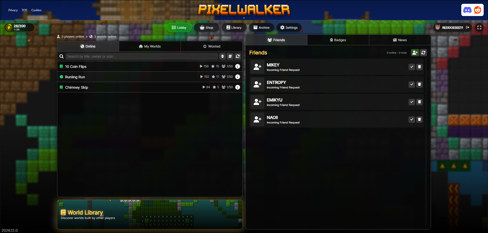

Hello! I'm Redd (otherwise known as REDDOESEE11). You have been sent this link to get to know a few things about PixelWalker.
Wait, what is PixelWalker?
PixelWalker is a online gaming platform centered around making, sharing and playing levels known as "Worlds". It is a spiritual successor of the game Everybody Edits, which shut down in 2020 due to the end of life of Adobe Flash.

What you see when you're logged into pixelwalker.net.